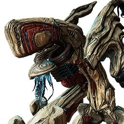
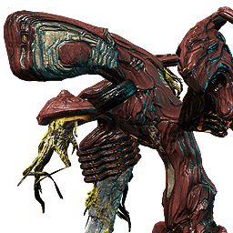
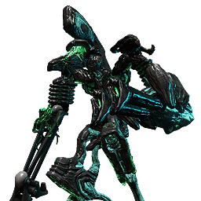

Se equipando para fazer Eidolons: Guia de iniciante
Tudo que você precisa saber para começar a caçar Eidolons nas Planícies de Eidolon.



Cetus (Planícies de Eidolon)
…
--:--
Neste guia
Este guia está dividido em três partes. Use o menu no topo da página para navegar entre elas:
- Como funciona?: A rotação dos Eidolons, o que é Tridolon e como funcionm as mecânicas.
- Equipamentos: Warframe, armas, Operador e Amp recomendados.
- Modo Iniciante: Uma configuração simplificada para quem está começando.